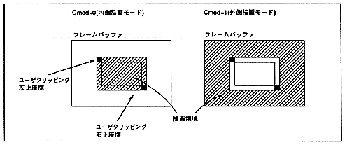

Figure 6.7 Drawing area

∙ Do not set this bit to 1 when user clipping is disabled (Clip = 0).
The combination of user clipping valid bit and clipping mode bit is as follows.
Clip | Cmod | User Clipping processing |
0 | 0 | User clipping disabled |
0 | 1 | Setting prohibited (Do not set) ) |
1 | 0 | Inner drawing mode |
1 | 1 | Outside drawing mode |